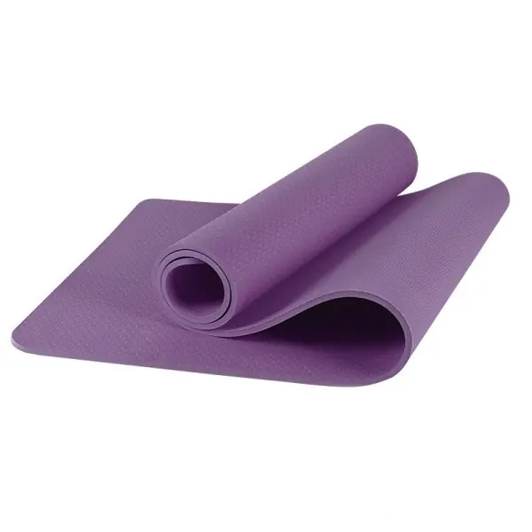
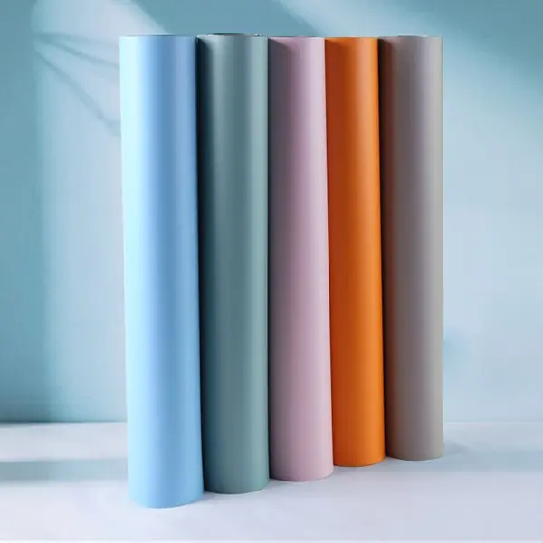
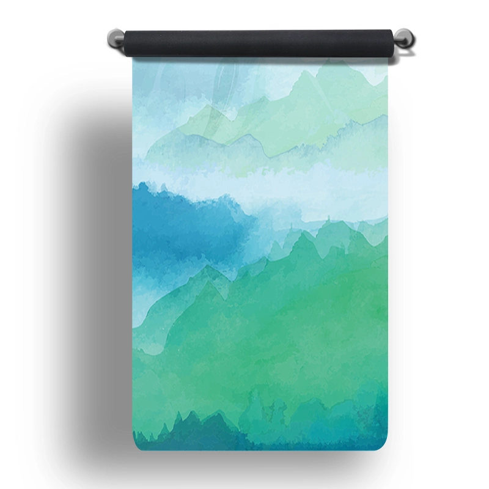
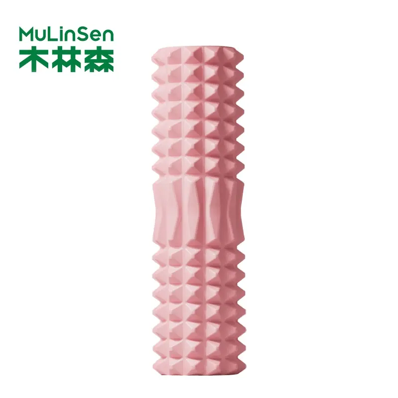
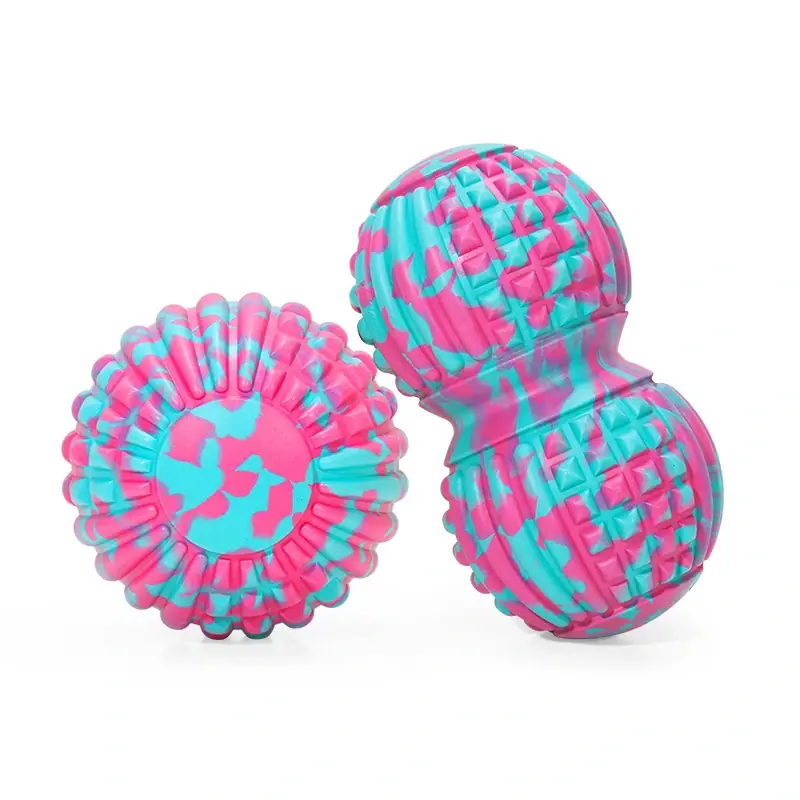
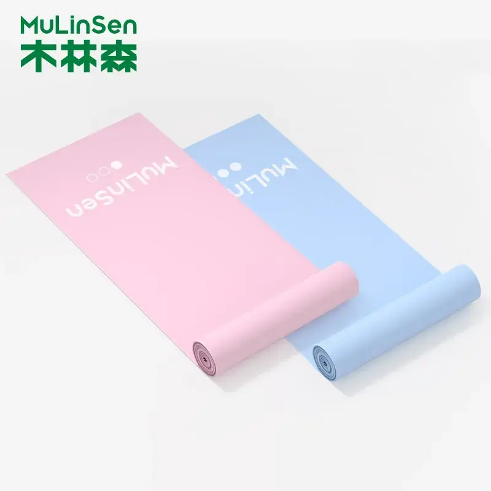

10개 카테고리에 걸쳐 총 147종의 공장 직판 제품이 준비되어 있습니다. 원하는 제품군을 선택하여 전체 사양을 확인하거나, 원하는 사양을 알려주시면 그에 맞춰 제작해 드리겠습니다.
아래에 나열된 모든 제품군은 동일한 제조업체에서 생산되었으며, 동일한 색상 체계를 따르고 하나의 구매 주문(PO)으로 처리됩니다. 구매자의 요구 사항에 맞는 제품을 선택해 주시면, 저희가 전체 키트의 사양을 확정해 드리겠습니다.
스튜디오를 새로 열거나 리모델링할 때 — 매트, 블록, 볼스터, 스트랩, 해먹을 한 세트로 묶어, 원하는 색상으로 한꺼번에 배송해 드립니다.
프리 웨이트, 매트, 로프, 밴드, 회복 용품 — 단 하나의 공급업체, 통일된 색상 체계로, 고객사의 브랜드를 적용할 수 있도록 준비되어 있습니다.
로고가 새겨진 소음이 적고 냄새가 거의 나지 않는 매트와 소품 — 객실용 요가 키트와 스파 판매용 제품군.
OEM/ODM을 포함한 전체 카탈로그 — 고객님이 원하는 색상, 로고, 포장, 시즌당 단일 공장 및 단일 발주서.
롤러, 페이시아 건, 볼, 스틱 — 클리닉 및 회복 스튜디오를 위해 주문별로 밀도, 질감, 색상이 지정됩니다.
마켓플레이스 및 DTC 판매자를 위해 제작된, 가볍고 판매량이 많은 SKU로 배송비가 저렴한 제품들 — 로프, 밴드, 공, 블록, 여행용 매트 등.









도면, 희망 가격 또는 사진을 보내 주시면 24시간 이내에 견적서와 샘플 제공 계획을 회신해 드립니다. 최소 주문 수량(MOQ)은 100개부터입니다.
견적 받기